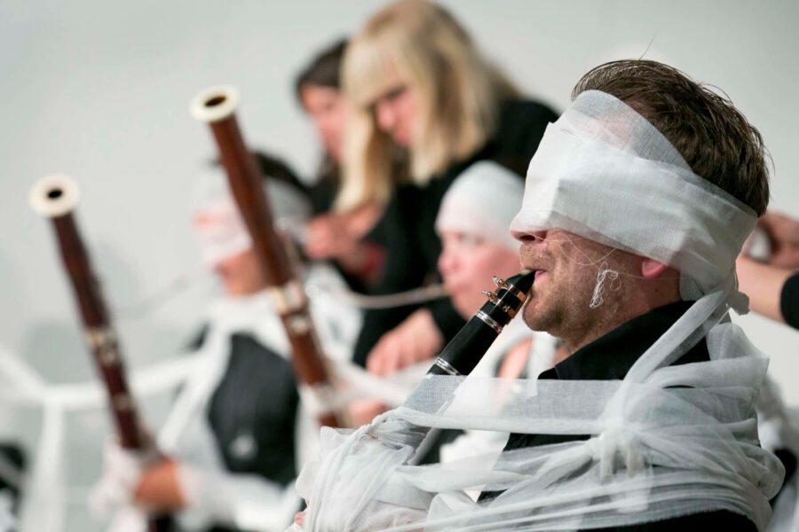

Night for Yoko Ono
About the Performance
Night for Yoko Ono is the second of two days held in celebration of Yoko Ono’s birthday and the closing of Yoko Ono: Music of the Mind at the MCA. For this evening, Northwestern University’s Contemporary Music Ensemble presents a set of iconic avant-garde compositions, featuring works by Yoko Ono, John Cage, and Toshi Ichiyanagi, and led by conductors Alan Pierson (Alarm Will Sound) and Ben Bolter. Joining them onstage is composer and performer Raven Chacon, who engages multiple Yoko Ono Instructions as interludes throughout the evening. The event also includes one of Ono’s seminal Instruction Scores, Sky Piece to Jesus Christ.
Tickets and schedule information about Day for Yoko Ono can be found on the event page.
About the Artists
Northwestern University’s Contemporary Music Ensemble (CME) presents exciting concerts of wide-ranging contemporary works. A one-on-a-part ensemble of approximately 20 players, CME trains students to take on this challenging repertoire while thriving in a large chamber ensemble setting. Each year, CME plays side-by-side with great guest artists, and collaborates with student and faculty composers from the Northwestern community as well as major visiting guests.
Ben Bolter (Associate Director, Institute for New Music and Co-Director of Contemporary Music Ensemble) made his orchestral conducting debut with the National Symphony Orchestra at age 25, with the Washington Post praising his performance: “Bolter spotlighted the showiest aspects . . . and made it look easy.” As part of Chicago’s acclaimed Ear Taxi Festival, his world premiere of Drew Baker’s NOX was named Chicago’s Best Classical Music Performance of 2016 by the Third Coast Review. John von Rhein of the Chicago Tribune remarked: “[Drew Baker’s] NOX made an altogether striking close to an absorbing, eclectic program, quite the best of the Ear Taxi events.” Bolter has also served as an assistant conductor with the Indianapolis Symphony and has been a frequent guest at the Civic Orchestra of Chicago. Bolter has worked with some of the country’s leading new music ensembles. He led the inaugural performance of the acclaimed Grossman Ensemble in what the Chicago Tribune described as a “historic” debut and a performance that “set a high standard for itself — and lofty expectations for the concerts ahead.” He has also worked extensively with the International Contemporary Ensemble (ICE), Fulcrum Point New Music Project, Third Coast Percussion, Spektral Quartet, Indiana University New Music Ensemble, and Square Peg Round Hall, and soloists, including Claire Chase, Tony Arnold, Kate Soper, Vijay Iyer, Iarla Ó’Lionáird, among others. Bolter has given world premieres by Shulamit Ran, Sam Pluta, Marcos Balter, Tonia Ko, Anthony Cheung, and Matthew Peterson and has worked closely with major figures such as Steve Reich, Tania León, Julia Wolfe, John Luther Adams, David Lang, and Esa-Pekka Salonen. Under the stage name Boltah he has released original songs on streaming platforms and performed at venues nationwide. Boltah collaborates with artists across multiple disciplines and has music featured in animations and exhibitions. His recent collaboration with artists/writers Monica Rickert-Bolter and Joel Rickert featured in an animatic as part of the grand opening of the National Public Housing Museum in Chicago in December 2024.
Raven Chacon is a composer, performer, and installation artist born at Fort Defiance, Navajo Nation. A recording artist over the span of 24 years, Chacon has appeared on over 80 releases on national and international labels. He has exhibited, performed, or had works performed at LACMA, The Whitney Biennial, Borealis Festival, SITE Santa Fe, Swiss Institute Contemporary Art New York, and more. As an educator, Chacon is the senior composer mentor for the Native American Composer Apprentice Project (NACAP). In 2022, he was awarded the Pulitzer Prize in Music for his composition Voiceless Mass, and in 2023 was awarded the MacArthur Fellowship.
Alan Pierson has been praised as “a dynamic conductor and musical visionary” by The New York Times, a “conductor of monstrous skill” by Newsday, “gifted and electrifying” by the Boston Globe, and “one of the most exciting figures in new music today” by Fanfare. He is the Artistic Director and conductor of the acclaimed ensemble Alarm Will Sound, which has been called “the future of classical music” by The New York Times and “a sensational force” with “powerful ideas about how to renovate the concert experience” by The New Yorker. Mr. Pierson served as the Artistic Director and conductor of the Brooklyn Philharmonic. The New York Times called Pierson’s leadership at the Philharmonic “truly inspiring,” and the New Yorker‘s Alex Ross described it as “remarkably innovative, perhaps even revolutionary.” As a guest conductor, Pierson has appeared with the Los Angeles Philharmonic, the Chicago Symphony Orchestra, the Hamburg Symphony Orchestra, L.A. Opera, Nationaltheater Mannheim, the London Sinfonietta, the Steve Reich Ensemble, the Orchestra of St. Luke’s, the New World Symphony, and the Silk Road Project, among other ensembles. He is codirector of the Northwestern University Contemporary Music Ensemble, and has been a visiting faculty conductor at the Indiana University Jacobs School of Music, the Eastman School of Music, and at the Banff Centre for the Arts and Creativity. Pierson regularly collaborates with major composers and performers, including Yo Yo Ma, Steve Reich, Dawn Upshaw, Osvaldo Golijov, John Adams, David T. Little, Augusta Read Thomas, David Lang, Donnacha Dennehy, La Monte Young, and Tyshawn Sorey, and choreographers John Heginbotham, Christopher Wheeldon, Akram Khan, and Elliot Feld. He has spearheaded critically acclaimed cross-genre collaborations with artists like Yasiin Bey, Erykah Badu, and Medeski Martin and Wood. Pierson is passionate about creating theatricalized performance experiences that use music, theater, and multimedia to connect listeners more deeply to great music. Beyond his work in the concert hall, Pierson is an avid recording producer and artist, having released 30 albums on Nonesuch Records, Sony Classical, Cantaloupe Music, Oehms Classics, and Sweetspot DVD. Pierson received bachelor degrees in physics and music from the Massachusetts Institute of Technology, and a doctorate in conducting from the Eastman School of Music. In 2022, he received the Eastman School of Music Centennial Award.